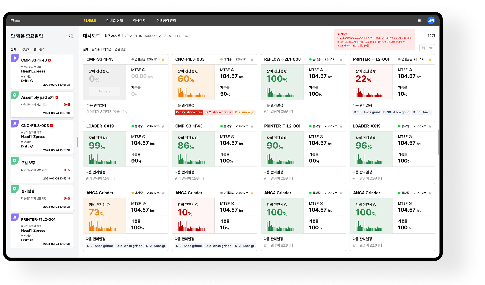
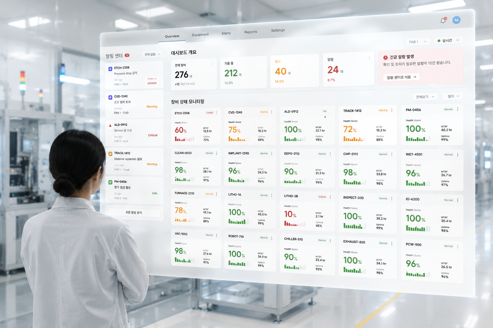
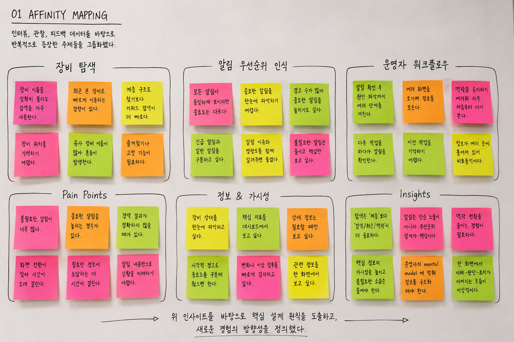
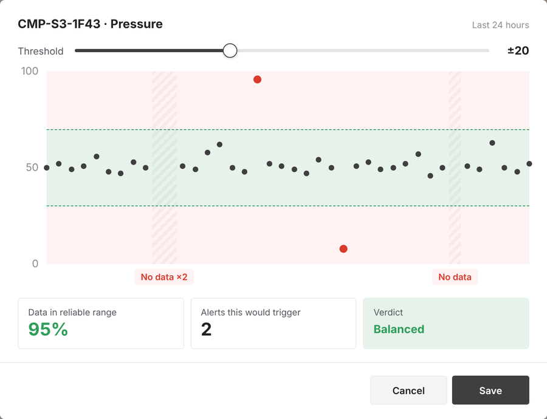
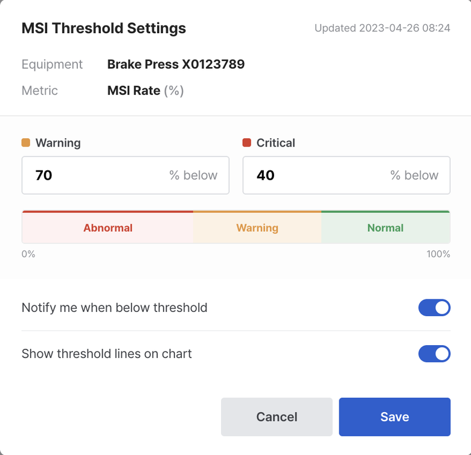
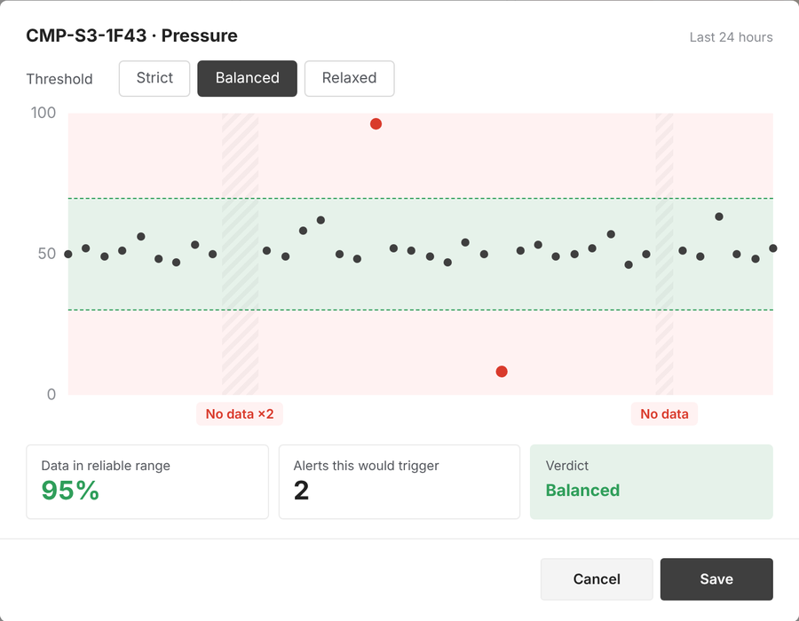
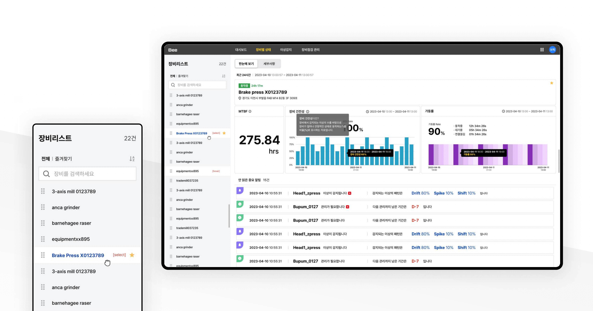
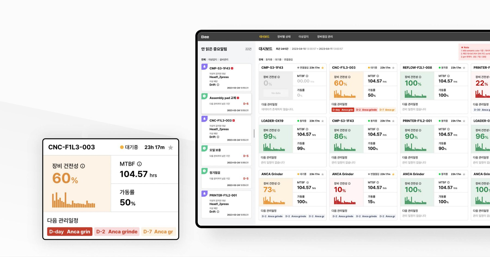
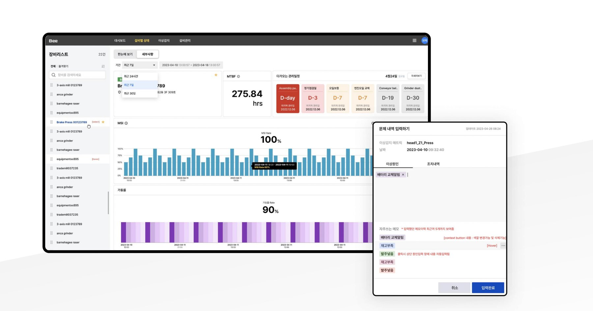
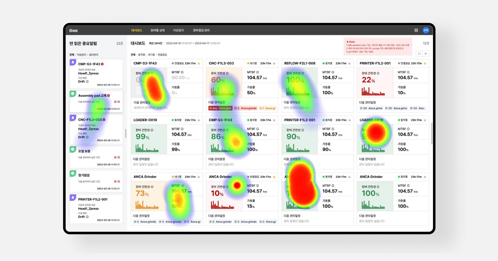

A real-time equipment monitoring dashboard for manufacturing that turns scattered alerts into a single, prioritized workflow.

I designed Bee end to end, from user research to high-fidelity UI. Bee is a B2B equipment monitoring and notification platform sold to manufacturing companies including SK hynix. Working closely with PMs, engineers, and data analysts, I turned complex real-time equipment data into an interface that surfaces only the issues that need a human's attention.

Green means go. Yellow means look closer.
Never make anyone guess.
Operators had access to all the data they needed, but not the clarity to understand what required attention first. Critical alerts were often buried among routine notifications, making quick decision-making increasingly difficult.
Show only what's relevant, so operators can cut through the noise and act faster.
Before exploring interface solutions, I focused on understanding how operators monitored equipment, responded to anomalies, and searched for information throughout their daily workflow. Through interviews, workflow analysis, and collaborative discussions with domain experts, several behavioral patterns consistently emerged.

Rather than navigating complex equipment trees, operators relied on search, recently viewed equipment, and production context to locate information quickly.
Users mentally separated notifications into critical, monitor, and ignore. Existing interfaces treated every alert equally, increasing cognitive load.
Investigating a single anomaly often required opening multiple pages before enough context was available to make a decision.
Missing or spiking sensor values triggered alerts just like real anomalies. Operators checked each one by hand, and many turned out to mean nothing. A large share of their effort went into alerts that never needed a human.
I translated the research findings into four testable hypotheses that guided my design decisions before moving into wireframes and prototypes.
If critical alerts are surfaced before secondary information, operators will recognize urgent issues faster.
If monitoring and issue reporting happen in one continuous workflow, unnecessary navigation will decrease.
If equipment status can be understood at a glance, cognitive load during monitoring will be reduced.
If bad sensor data is filtered out before it becomes an alert, operators will spend less time on checks that never needed them.
Help operators spot the alerts that matter faster.
Stop bad data from becoming alerts, so there's less to check at all.
The setting opens from the chart where operators notice odd data, in one click. Dragging the slider shows right away which readings fall outside and how many alerts the setting would trigger.

See the result while adjusting. Less suited to exact values.

Precise, but the result shows only after applying.

Fewest decisions, but ignores how each machine differs.
Operators don't know the right number in advance. They tune by watching how their data reacts. Numeric input hid that reaction until after applying, and presets took away per-machine control. The slider was the only option that kept both: immediate feedback and fine control.
| Missing values | Marked on the axis, excluded from the alert count |
| Not enough data | Empty state explaining when it becomes available |
| Unsaved changes on close | Discard or keep editing |
| Save fails | Value kept, inline error and retry |
| Some machines fail in bulk apply | Shows which and why; retry only those |
I rebuilt this flow in Claude Design on the existing product screen. Its first version (the numeric input above) was a generic health alert with blue buttons and English copy. I refocused it on data quality, matched the product's palette and Korean copy, and added the missing states.
Original screens are confidential. Reconstructed from memory; data is illustrative.
Instead of displaying every data point equally, I designed the dashboard around operator workflows: prioritizing critical information, cutting unnecessary navigation, and helping operators move from detection to action as quickly as possible.
Usability tests showed that operators didn't want to dig through a category tree to find equipment. So I replaced it with a simple list where they can pin priority items to the top or bottom and use contextual search to find what they need right away.

I worked with data analysts to define which metrics mattered most and set a clear information hierarchy for each card. Status, MTBF, and uptime sit together in every card, and a balanced color system keeps the screen readable without feeling monotonous.

I designed an anomaly input popup so operators can log an issue the moment it happens, without leaving the dashboard. Auto-suggestions pull in existing issue records or let them add new related data on the spot.

By designing around operator workflows, I removed unnecessary steps between seeing an alert and acting on it. Critical data became easier to reach, and real-time alerts fit into one continuous flow, easing the daily cognitive load of triaging alerts.
What operators told us after rollout
Critical alerts stood out
“I can spot urgent issues without scanning every notification.”
Paraphrased from operator interviews
Less screen-hopping
“I just search or check my pinned list instead of digging through the tree.”
Paraphrased from operator interviews

Real-time monitoring tools succeed or fail by what they leave out. The fewer steps operators had between seeing an alert and acting on it, the faster they could decide. Next time, I'd set baseline metrics before launch so the impact could be measured, not just heard.